Auftakt unserer Haute Route – und gleich die Königsdisziplin: über den Col du Tsaté von einem Tal ins nächste. Die klassische Etappe startet unten in Les Hauderes (der Komoot-Plan sagt 13,2 km, 1.923 Hm Aufstieg, 7:10 h) – wir sind stattdessen im Bergdorf La Sage eingestiegen und haben uns damit die ersten 400 Höhenmeter Anstieg auf Asphalt- und Wiesenwegen gespart. Bleiben immer noch gut 11 km mit rund 1.650 Hm Aufstieg und 500 Hm Abstieg: durch Lärchenwald hinauf zu den Alphütten des Tsaté, über den 2.868 m hohen Pass und auf der anderen Seite am Gletschervorfeld entlang zur Cabane de Moiry.
Start in La Sage (1.667 m): Das kleine Bergdorf klebt am Sonnenhang des Val d’Hérens, hoch über Les Hauderes – ringsum die für das Wallis typischen sonnenverbrannten Holzhäuser und Stadel (Mazots), die auf runden Steinplatten-„Pilzen“ stehen, damit die Mäuse nicht ans Korn kommen. Hinter den letzten Häusern beginnt der Weg sofort zu steigen, erst über Wiesen, dann durch lichten Lärchenwald.
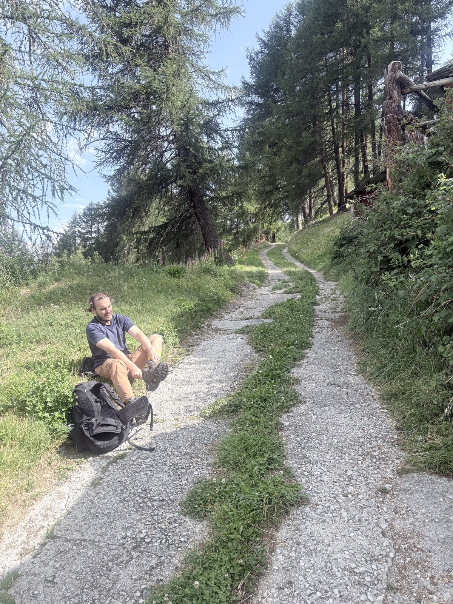
Letzte Amtshandlung vor dem Aufstieg: Anreiseschuhe raus, Wanderschuhe an – am Wegrand zwischen den ersten Stadeln von La Sage.
Alpage du Tsaté (ca. 2.170 m): Nach dem Wald öffnet sich das Gelände und man steht unvermittelt in einer anderen Zeit: Die Alpsiedlung du Tsaté besteht aus einem guten Dutzend niedriger Steinhütten, deren Dächer mit schweren Steinplatten gedeckt sind – im Sommer wird hier oben bis heute gealpt. An einer der Hütten hängt eine große Schweizer Fahne, dahinter fällt der Blick über das ganze Val d’Hérens auf die Bergkette gegenüber.
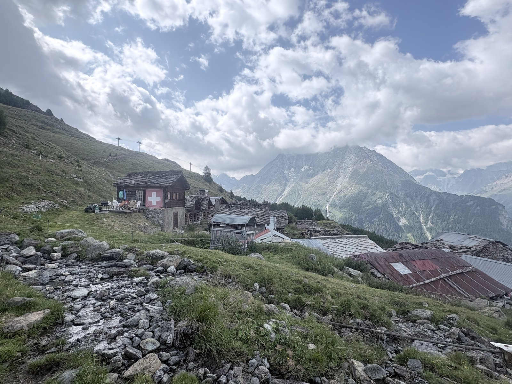
Die Alphütten von du Tsaté mit ihren Steinplattendächern – und der obligatorischen Schweizer Fahne. Von hier sind es noch gut 700 Höhenmeter bis zum Pass.
Col du Tsaté (2.868 m): Der Übergang vom Val d’Hérens ins Val de Moiry, ein Seitental des Val d’Anniviers. Die letzte halbe Stunde zieht sich durch Geröll und Schutt, dafür ist die Belohnung oben umso größer: Auf der anderen Seite liegt plötzlich eine komplett neue Bergwelt – unten im grünen Becken schimmern die ersten Schmelzwasserseen des Gletschervorfelds, dahinter staffeln sich die Dreitausender um den Glacier de Moiry.
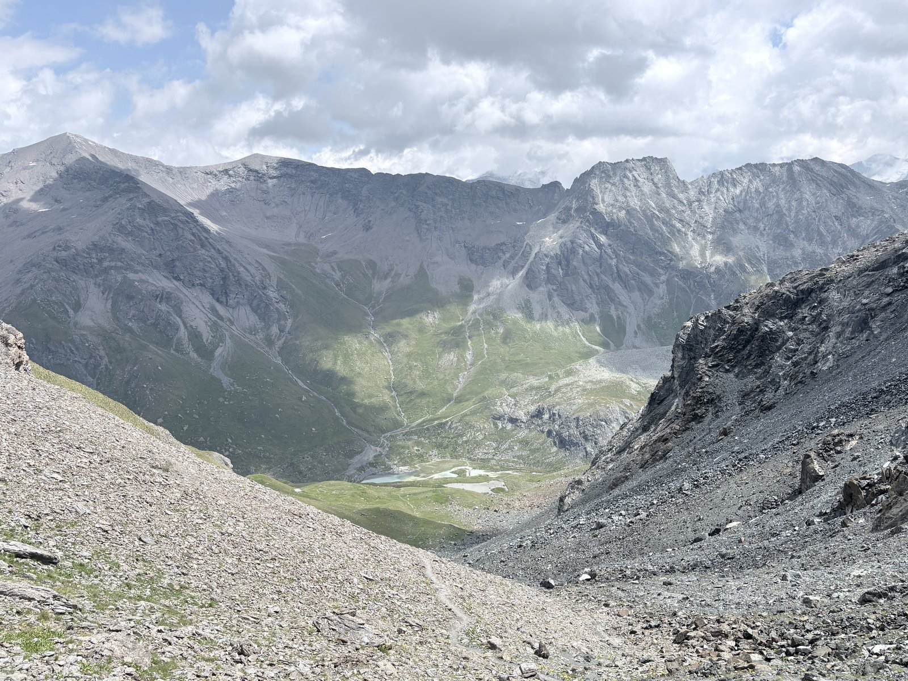
Blick vom Col du Tsaté nach Osten: unten das Becken mit den Seen des Gletschervorfelds, über die Schuttflanke schlängelt sich unser Abstiegsweg.
Lac de Moiry: Beim Abstieg vom Pass taucht rechts unten der Stausee auf – ein derart unwirkliches Türkis, dass man erst an eine Fototapete denkt. Die Farbe kommt von feinst zermahlenem Gesteinsmehl („Gletschermilch“), das der Glacier de Moiry in den See spült. Die 148 m hohe Bogenstaumauer am Nordende wurde 1958 fertiggestellt; das Wasser fließt den Kraftwerken im Val d’Anniviers zu.
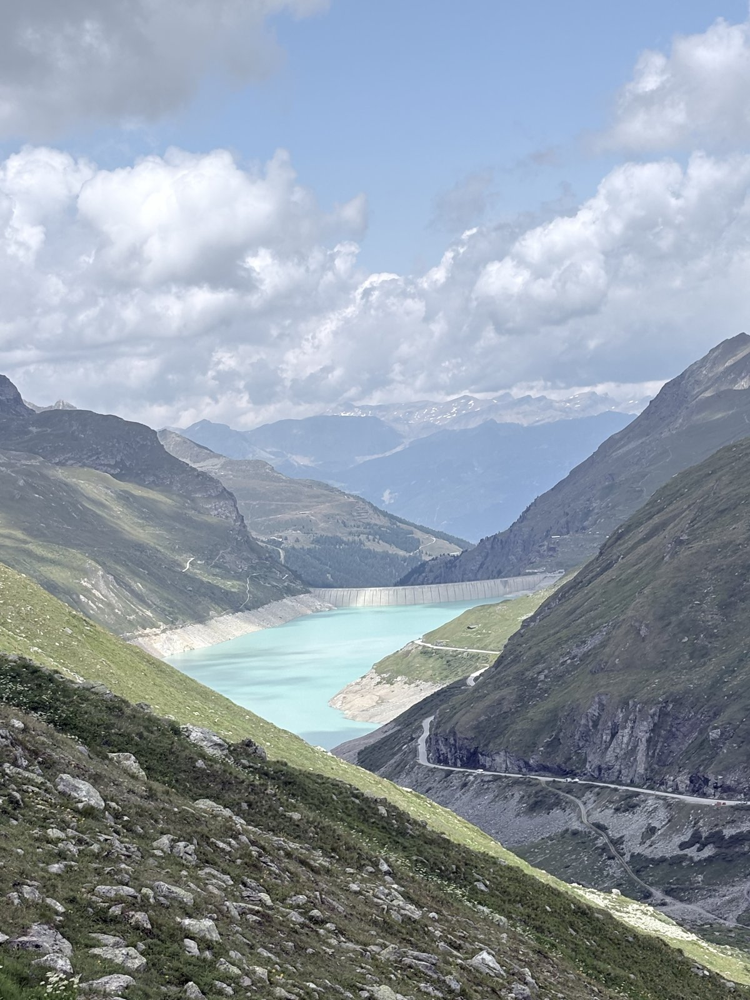
Der Lac de Moiry (2.249 m) mit seiner Staumauer – das Türkis ist echt, keine Filterei.
Höhenweg zur Hütte: Statt zum See hinabzusteigen, quert der Weg hoch über dem Talschluss Richtung Süden. Unten breitet sich das Gletschervorfeld aus: der milchig-türkise Lac de Châteaupré, verzweigte Schmelzwasserbäche, frisch geschliffene Felsplatten – und darüber schiebt sich der Glacier de Moiry mit seinem zerrissenen Eisbruch ins Tal. Das letzte Stück zur Hütte folgt dem blanken Moränenkamm – links Eis, rechts Schutt, geradeaus die Hütte auf ihrem Felsriegel.
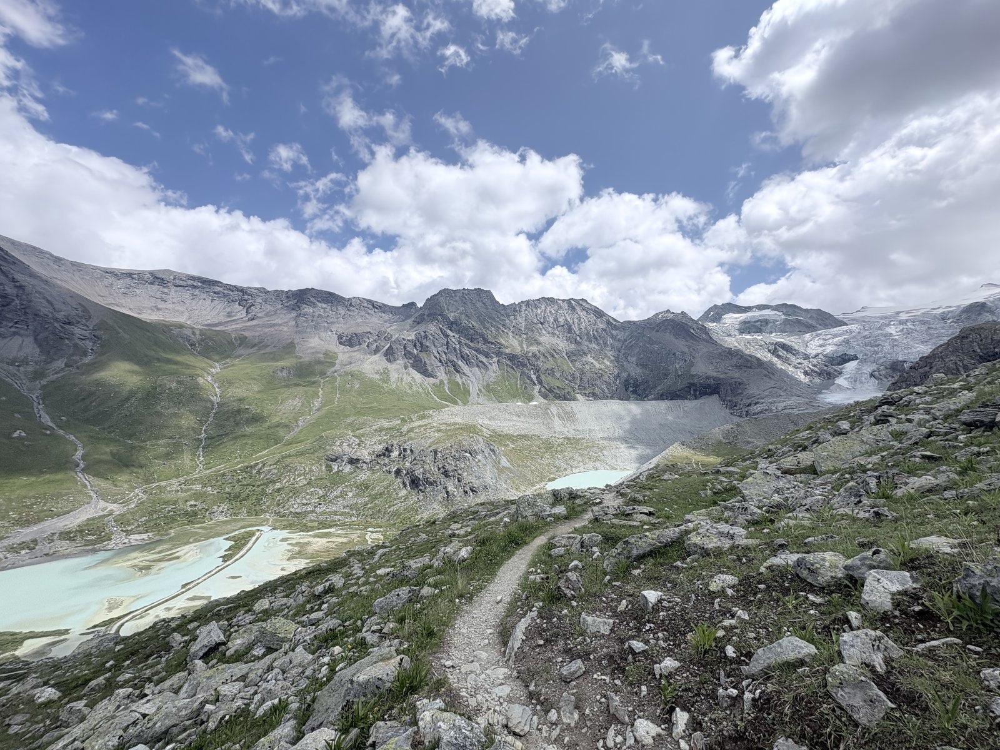
Auf dem Höhenweg: unten der Lac de Châteaupré und die Schmelzwasserarme, rechts der Glacier de Moiry.
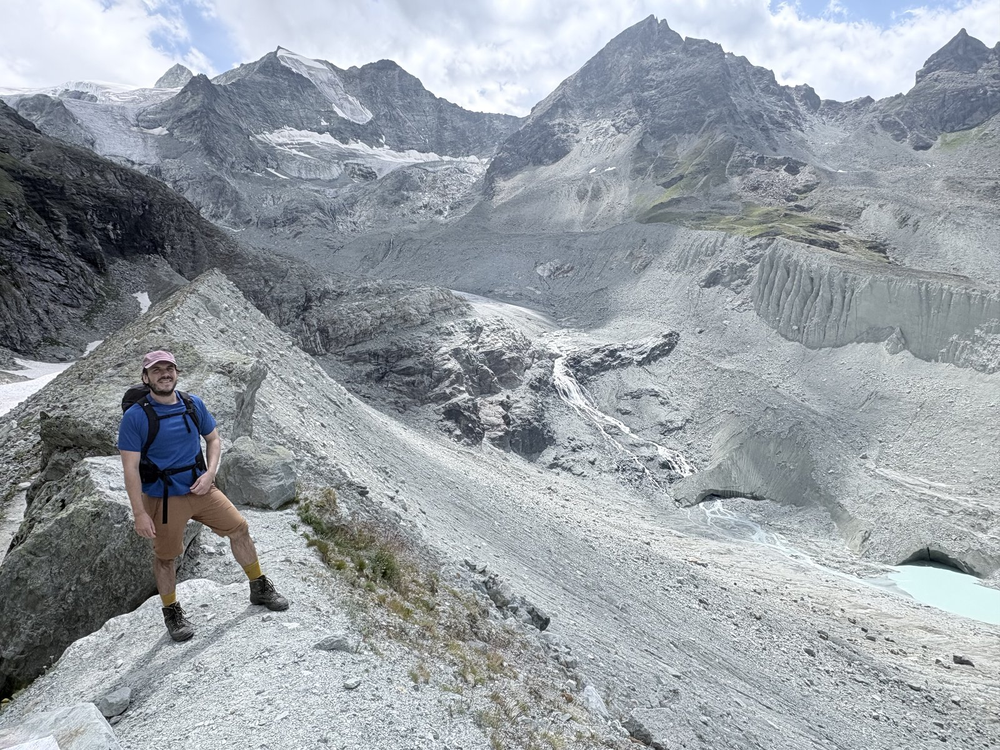
Auf dem Moränenkamm kurz vor der Hütte – hinter uns rauscht das Schmelzwasser in Kaskaden aus dem Eisbruch.
Cabane de Moiry (2.825 m): Die Hütte der SAC-Sektion Montreux thront auf einem Felsriegel direkt über dem Eisbruch des Glacier de Moiry – näher kommt man einem Gletscher zu Fuß kaum. 2010 bekam das alte Steinhaus von 1924 seinen markanten Anbau: eine dunkle Stahlkonstruktion mit raumhoher Panoramaverglasung, hinter der man beim Abendessen direkt auf die Séracs schaut. Wir sind rechtzeitig vor dem Nachmittagsnebel oben – Zeit für Tee, Kartenspiel und den ersten Hüttenabend der Tour.
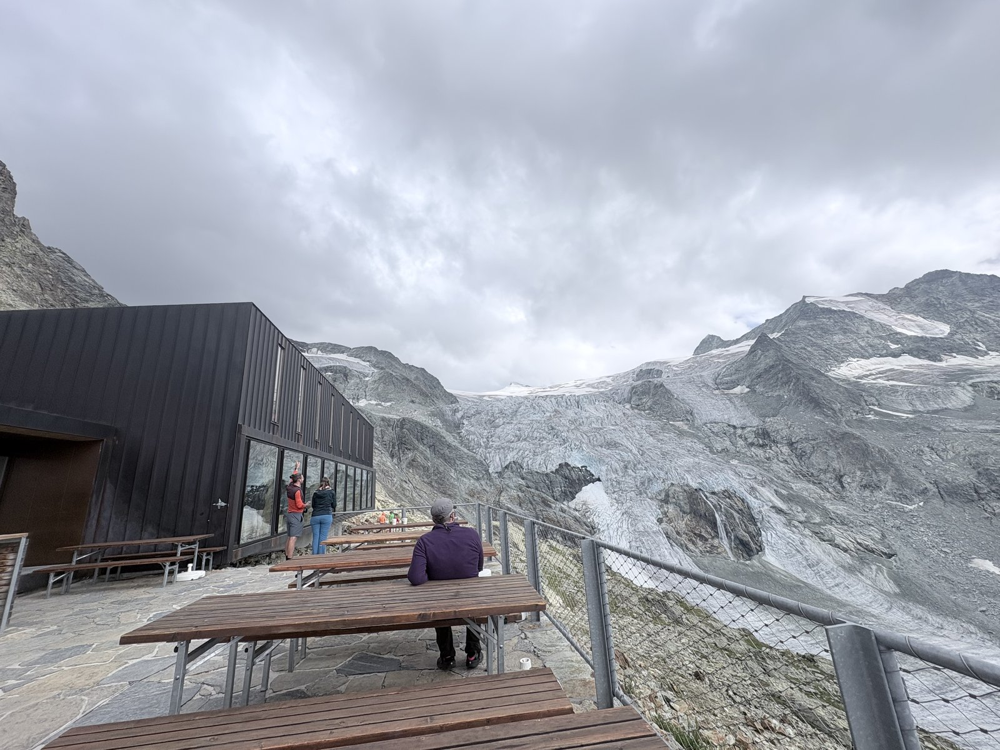
Die Cabane de Moiry: links der Anbau von 2010 mit seiner Panoramaverglasung, rechts der Eisbruch – die Terrassenbänke sind die ersten Logenplätze.
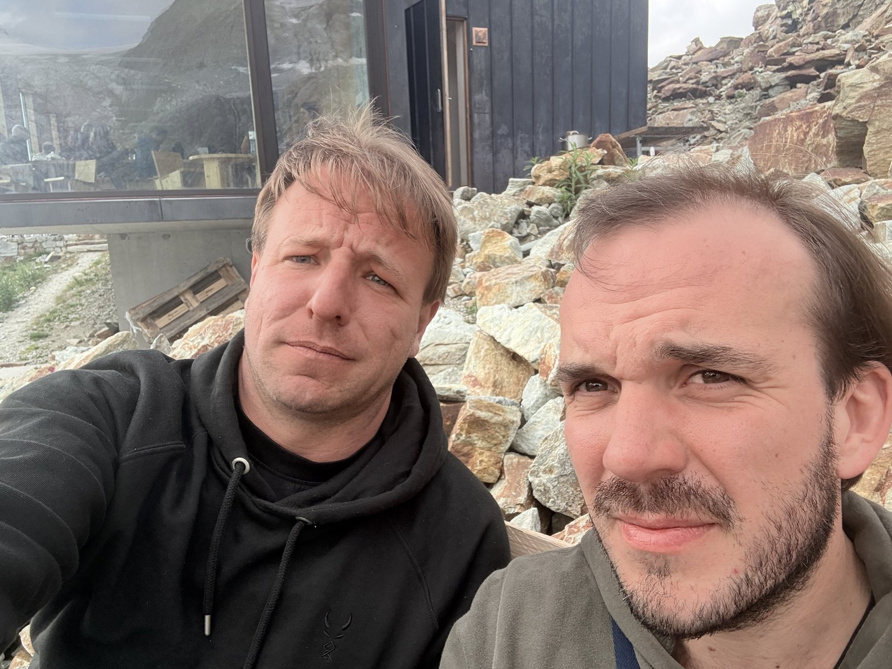
Angekommen – Beweisfoto vor der Hütte, Etappe 1 geschafft.
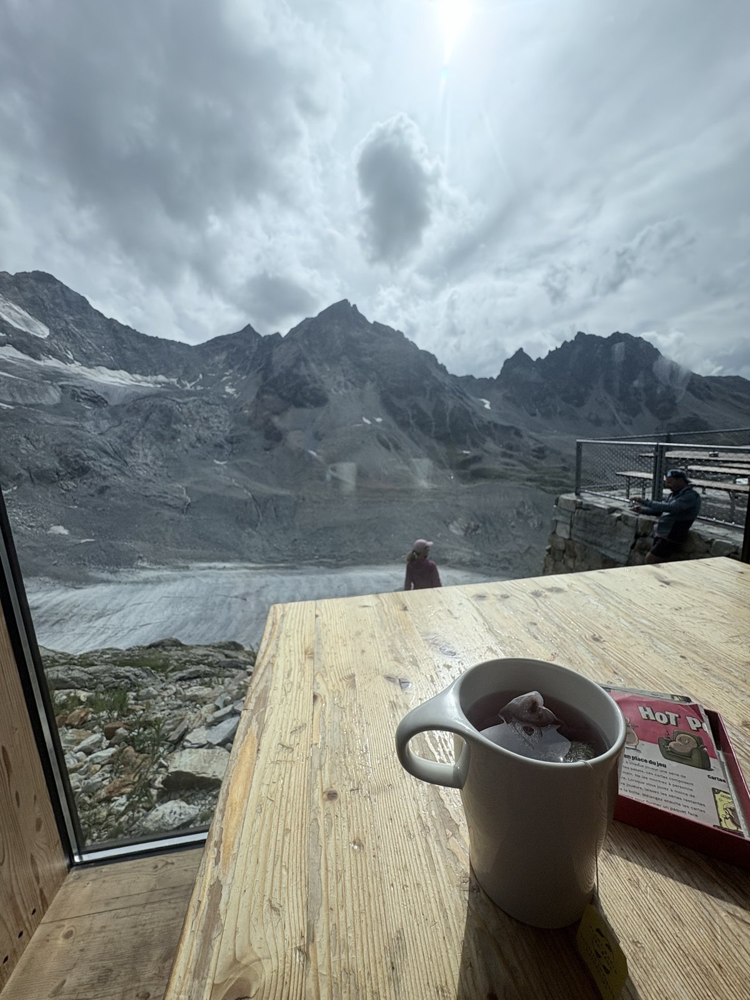
Angekommen: Tee auf der Terrasse, das Kartenspiel liegt schon bereit – draußen zieht der Nachmittagsnebel über den Gletscher.
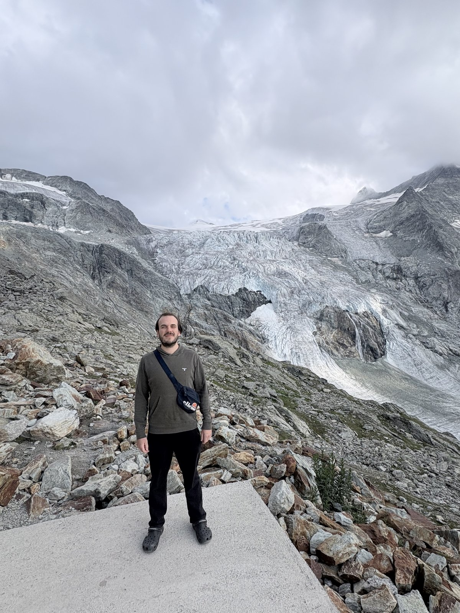
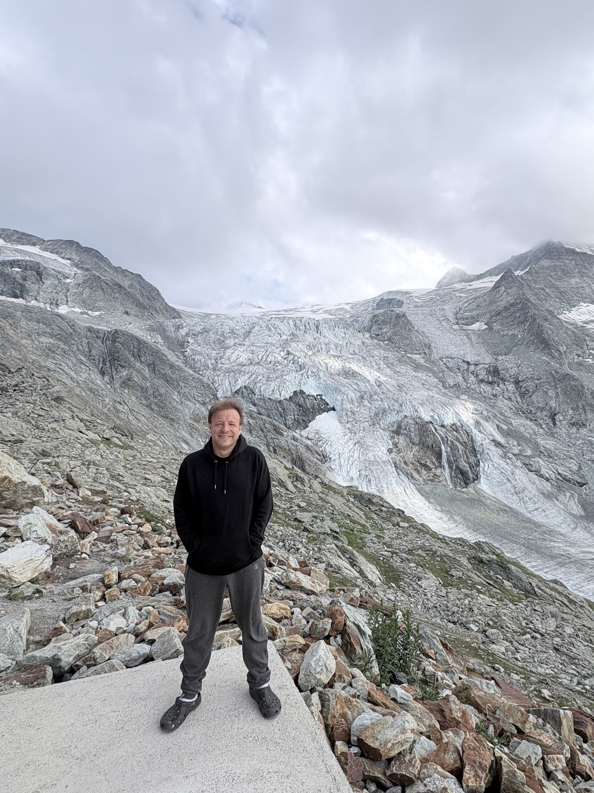
Feierabend auf 2.825 m: Wanderschuhe aus, Crocs an – der Gletscherblick gehört zum Abendprogramm.
Der Eisbruch aus der Nähe: Vom Hüttenfelsen sind es nur ein paar Schritte, bis man dem Glacier de Moiry direkt gegenübersteht. Wo das Eis über die Felsstufe bricht, türmen sich die Séracs zu einem chaotischen Labyrinth aus Türmen und Spalten, darunter stürzt das Schmelzwasser in weißen Kaskaden über den blank geschliffenen Fels. Die frisch ausgeaperten Felspartien mitten im Eis zeigen unbarmherzig, wie stark der Gletscher in den letzten Jahren zurückgegangen ist.
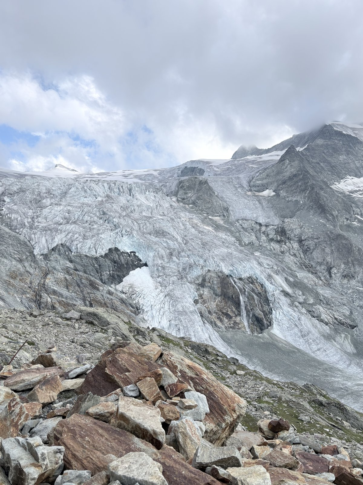
Unter dem Eisbruch schießt das Schmelzwasser über die Felsstufe – das Rauschen begleitet den ganzen Hüttenabend.
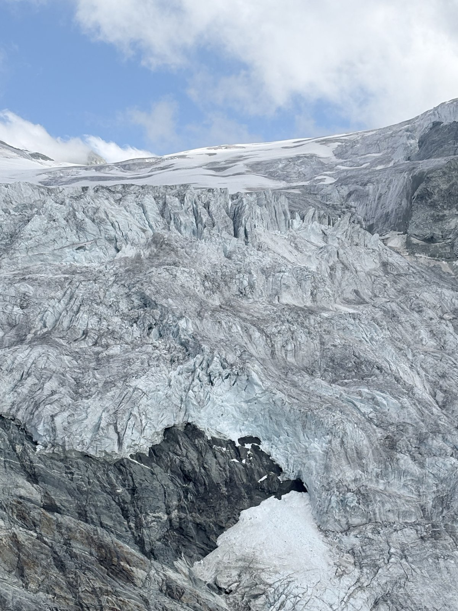
Séracs im Detail: Wo der Gletscher über die Steilstufe fließt, zerreißt das Eis in Türme, so groß wie Häuser.
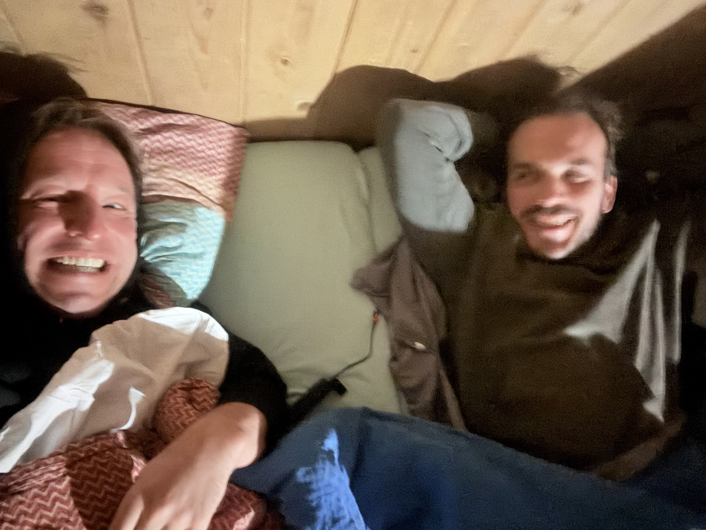
Gute Nacht im Matratzenlager – morgen wartet die nächste Etappe.